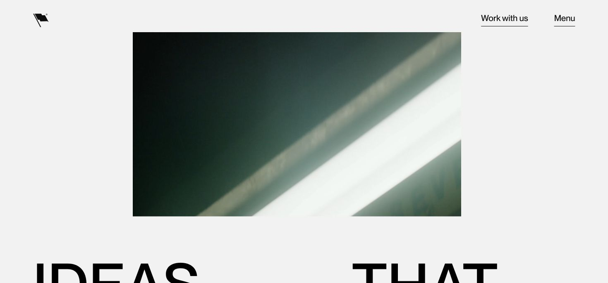
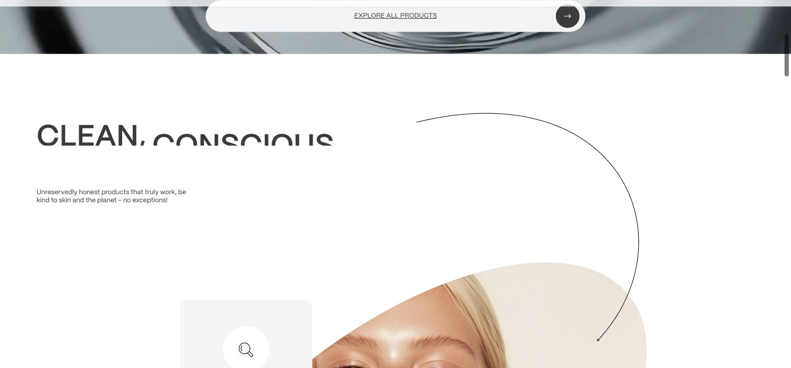
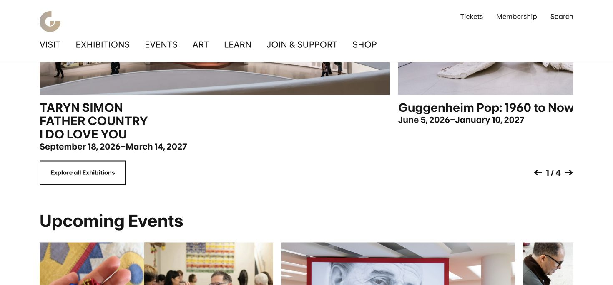
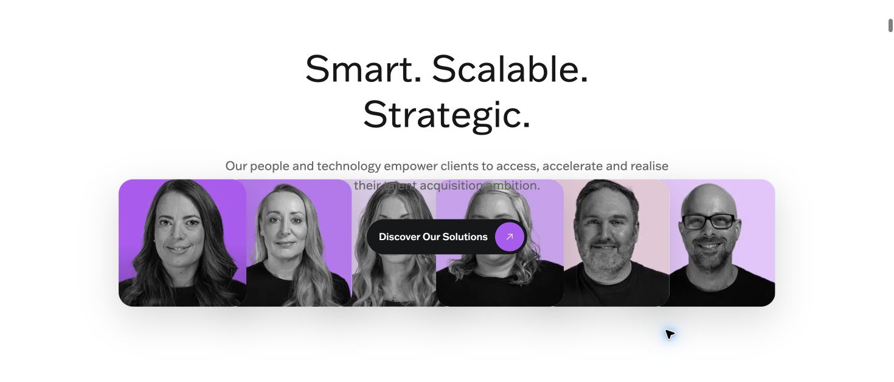

原站實際截圖 · Motto ↗從真實網站出發讓下一段，
讓下一段，
有不同的出場方式。
這次從品牌工作室、保養品牌、美術館與人才網站，
挑出四種不同的動態語言。
先看靈感來源，再看它如何變成常春藤的消息區塊。

原站實際截圖 · TrueKind ↗
現行實站截圖 · Guggenheim ↗F
照片取色
Guggenheim 的設計團隊曾以作品取色，讓背景跟著觀看中的作品改變。
放到常春藤從果樹、陽光、天空手動選出淡綠、米黃、霧藍，化成柔和色場。這版聚焦色彩的連續變化。
取色動效依 2025 作者案例；本次看到的現行首頁較簡潔，未重現該完整動效。

原站實際截圖 · Join Talent ↗換成常春藤的內容，實際試試看
D · 留白展幅
下方可直接捲動、播放、拖曳進度。四版採相同活動、新聞與照片；手機版可切換或另開全螢幕查看。
再走遠一點
Sweet Home Sweet ↗博物館線上展覽。色彩、形狀與影像分章，搭配縱向／橫向的閱讀節奏；適合研究整段故事如何換場。依原製作團隊案例Moooi · Paper Play ↗紙材與劇場式逐幕展開。可借它的紙頁想像與材質感，作為更有敘事感的延伸方向。歷史活動，依原團隊訪談